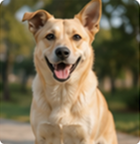
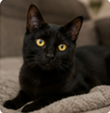
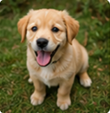
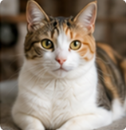
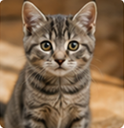

Max
Perro
2 años
Miraflores
Cariñoso y juguetón, le encanta correr y recibir caricias.
 Huellas de Auxilio
Huellas de Auxilio


Gestiona las mascotas publicadas y revisa las solicitudes recibidas.



Cariñoso y juguetón, le encanta correr y recibir caricias.

Tranquila y observadora, ideal para un hogar calmado

Cachorro lleno de energía, busca una familia activa.

Muy afectuosa y sociable, le encantan las siestas al sol.

Pequeño y leal, siempre listo para acompañarte.

Tierna y curiosa, está aprendiendo a conocer el mundo.